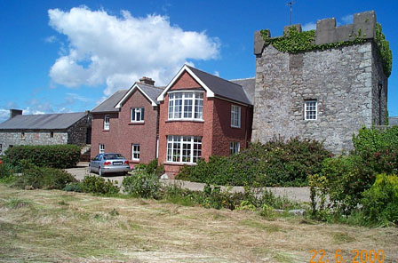
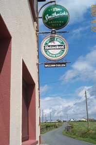
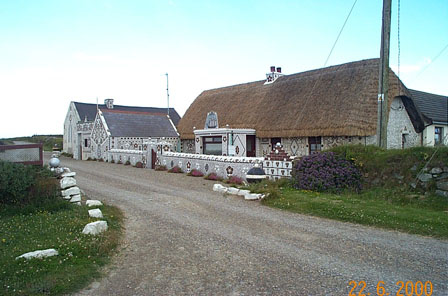

| Follow the above link to the main page for this topic or click the graphic below to visit the Homepage. |
 | Photo Gallery: Views of Cullenstown, Co Wexford Photos Courtesy of Charles G. Cullen |
 A beautiful view of Cullenstown Castle showing remnants of the original structure. Further information on the Castle can be found on the Cullens of Cullenstown page and also on the page for the Cullens of Co Wexford in the Surname History section. | |
 |
A sign on the way into Cullenstown. Note the old Irish name for the town, which is a variant on the often used "Ballycullen". |
| A sign outside a local establishment. Note William Cullen, proprietor. Unfortunately, the pub was closed on the day this photo was taken! |  |
 A most interesting and decorative cottage on the Cullenstown strand. | |